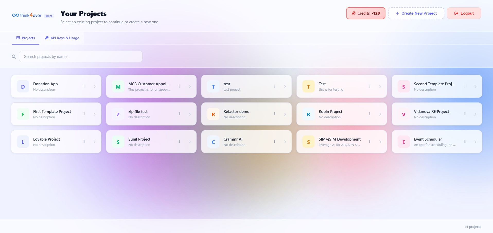
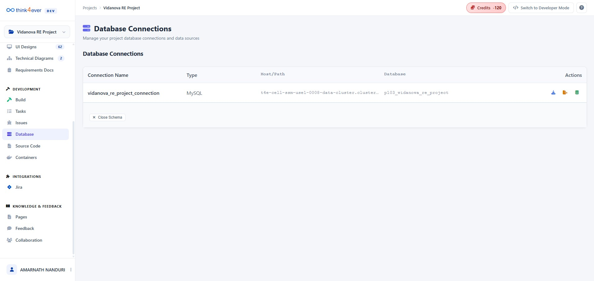

Database
The Database Connections module is the technical foundation of your application. In a high-integrity project like TransparencySeal, this is where the "Source of Truth" is defined and managed. It transforms a raw database into a visual, browsable asset that the AI can use to write code and generate reports.

Actions
-
Export & Download (Blue Icon)
It packages your entire database (tables, constraints, and rows) into a single
.sqlfile and downloads it to your computer. -
Export to Source (Orange Icon)
Saves the database schema directly into the project's internal file system.
-
Connect & Browse (Green Icon)
Activates the Schema Explorer for the selected connection.
Table Details
When you click a database block (or "tile") from the main inventory, the Table Details overlay acts as a deep-dive X-ray into that specific entity. This view is critical for auditing the structural integrity of your application, ensuring that the AI has mapped your business logic correctly.

The Structure Table (Schema View)
| Column | Purpose |
|---|---|
| Column |
The unique name for each data field (e.g.,
claim_number, loss_type).
|
| Type |
The technical format of the data. Notice
int for numbers, varchar for
text, date for time, and
decimal(15,2) for precise currency values.
|
| Nullable |
Indicates if the field can be left empty
(Yes) or if it is mandatory
(No). Fields like
claim_id and policy_id are
mandatory to ensure data integrity.
|
| Default |
The value assigned if no data is provided (e.g., status
defaults to 'OPEN').
|
| Key | Represents the Primary Key (the gold key icon 🔑). This is the unique identifier (like a social security number) for that specific record. |